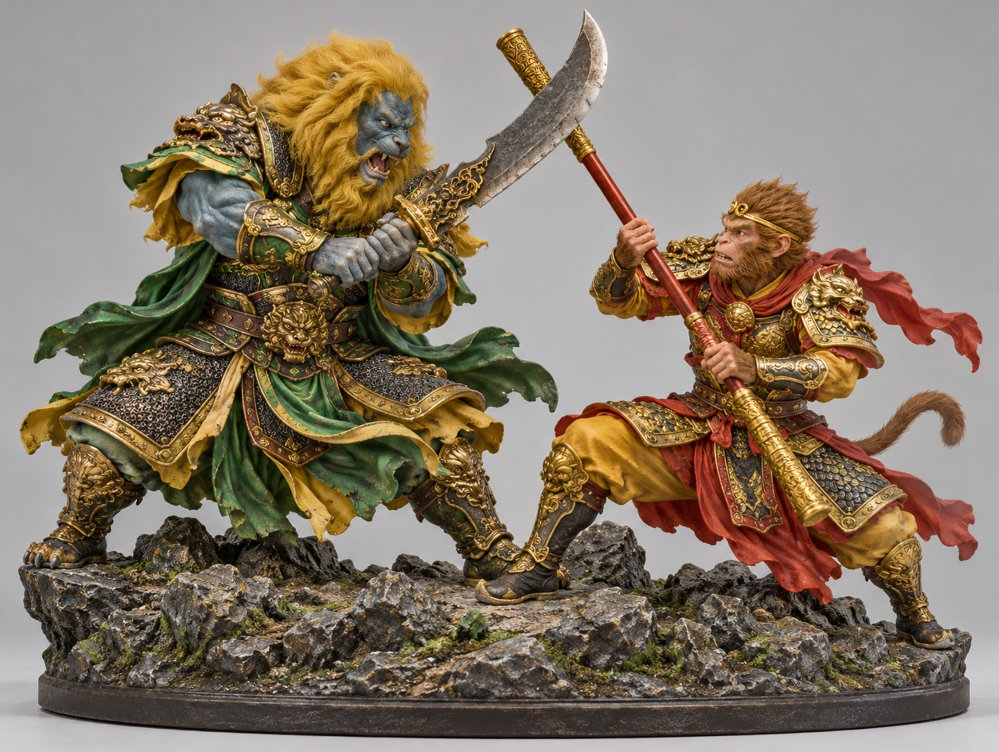

礼物的意义，
比大小更重要。
我们选择制作公共手办，赠送给老师和同学。让经典阅读成为一次可以分享的创作。
✳书里的齐天大圣，桌上的立体交锋。
和我们一起，把一段西游故事变成
送给老师与同学的礼物。

CONCEPT 001当前方案：孙悟空持金箍棒迎战青狮精，双方立于同一山石底座。结构与色彩将根据打印条件调整。
我们选择制作公共手办，赠送给老师和同学。让经典阅读成为一次可以分享的创作。
✳模型已做生成尝试；最终尺寸、份数、完成日期与试打结果待确认。STL 不保存彩色贴图。
狮驼岭 · 孙悟空大战青狮精 ·《西游记》第七十四至七十七回
话说太白金星接到报信：狮驼岭三魔，青毛狮子自称一口吞过十万天兵。于是悟空变成小妖"总钻风"去探洞，被大鹏装进阴阳二气瓶。悟空急忙拔出观音的三根救命毫毛，钻破瓶底逃了出来。
斗到精彩时，老魔现出原身，张口就要吞八戒。八戒连忙钻进草丛，悟空迎上去被吞了进去。悟空在狮子精的肚子里抓着心肝打秋千、翻跟头，还笑着说要"住过冬"。
老魔假意告饶，悟空拔毫毛变出绳子，在他心肝上打了个活扣，从鼻孔一喷嚏迸出，跳上山头尽力一扯。小妖远远笑他"清明未到就放风筝"，老魔"似纺车儿一般"跌下尘埃。
三魔终于在狮驼国擒了师徒，悟空上灵山请来如来，文殊和普贤菩萨领回坐骑。悟空从第七回压在五行山下的"心猿"，到第十四回已叫"心猿归正"，本事没变小，猴子却长大了。
随机抽题，答完就能看到解析。答对 4 题，领取知识印章。
启动后，再点一次，把游标停在金色区域。键盘也可以：聚焦按钮后按空格。
准备好了，就试试看。
每个浏览器每题一次，三个站点共享票数；换浏览器可能重复投票，不用于正式评选。
最新 60 张 · 每 30 秒同步
已填入确认过的资料；这是一份可编辑的草稿，不是已提交的学校表格。导出后可以发到小组群。
8 页网页演示，支持方向键切页。根据目前资料整理，后续可换成正式 PPT。
打开演示 ↗完整构图，可用于讨论、展示和后续建模参考。非打印实物照片。
下载参考图 ↓展开的书、悟空的眼睛与金箍棒，组成一枚造物印记。名称与图案均为初稿。
下载矢量 Logo ↓正式 PPT、学校原始要求和最终 STL：目前未收录，确认文件后再加入。这里的网页演示是新整理的初稿。